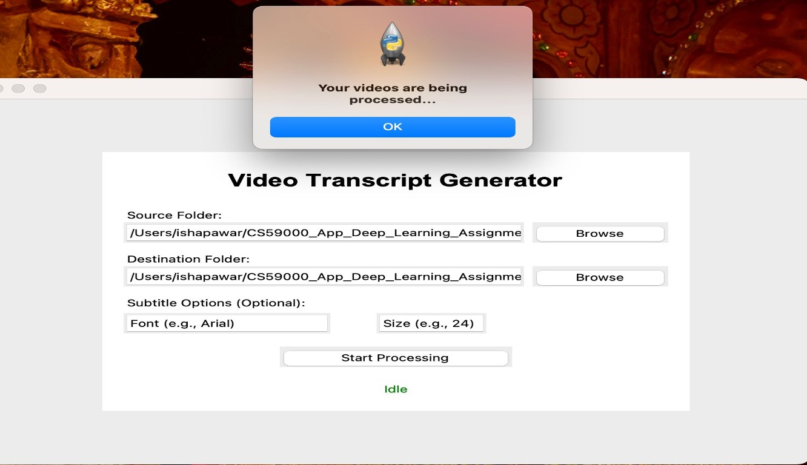
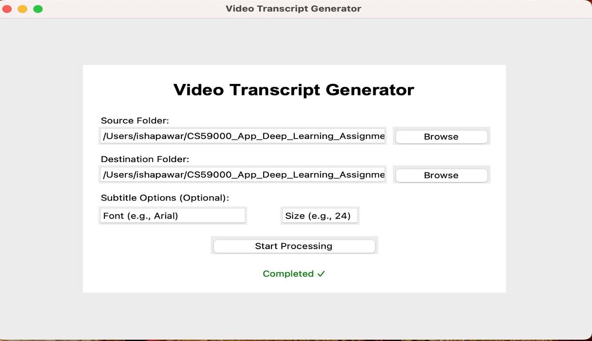

Upload a Video
A privacy-focused desktop application that converts video content into accurate transcripts and subtitles. The application uses FFmpeg for media processing, Faster-Whisper for automatic speech recognition, and a custom T5 natural-language-processing model trained on more than 100,000 sentence pairs to improve transcript quality.

Upload a Video

Transcription Generator

Completed Transcription